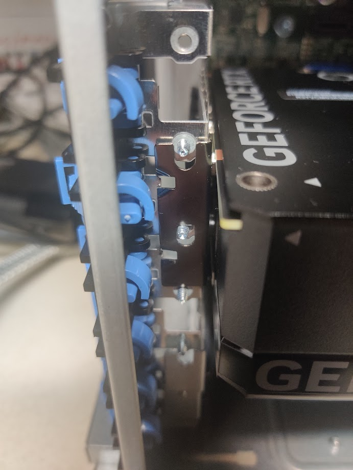

Building my own Server
Hardware
Selection
I wanted a machine for experimenting with devops and deep learning. That means plenty of ram, cpu, and a modest gpu.
I was very careful with my selection, and here is what I ended up with:
- Dell Precision Tower Server 7910, with 2X intel xeon E5 2687 v4. Came with 32 GB of ram. $300 USD
- More memory, when added, I will get a total of 128 GB of ECC memory. $60 USD
- Nvidia rtx 4070 GPU, 12 GB vram. $700
Building
Here is the inside of my server:

Anyway, I need to figure out where to put the GPU. The computer has several PCIe slots, and I want the fastest one.
Up top:

And below:

I need to figure out what each of these pcie ports is. What do the numbers and color mean?
To catalog them:
- Three black PCIe3x16 slots (all 75W)
- One blue PCIe3x16 75W + ext 225 w
- One black PCIe2x4 25 W
- One tan PCI slot
I think it is safe to assume that the color is related to wattage, not PCIe protocol. Since the computer comes with the necessary power plug that the nvidia gpu wants, it is safe to assume that any of the PCIe3x16 are optimal, although I will try to place the gpu in the best spot for cooling.
I found a forum post (wayback archive) where someone asked this exact question.
An unsourced answer replied that the blue pcie slot was the primary gpu slot, so since I only have one gpu, that is where I put it.
I found the manual for my system online, but it doesn’t seem to label each pci port in images.
I also did research into some youtube videos.
The important thing to note about the memory upgrading process is that the memory shroud (cover) does not interfere with other processes.
GPU
However, I am trying to add the gpu, so I can get monitor output, so I can run testing suites to ensure the computer is in proper working order.
However, the gpu does not seem to have screw slots for holding it in place. Rather than that, the entire thing rests on a single screw, as shown below.

But the GPU, is inserted:

After plugging the gpu power in:

I can turn the machine on and get monitor output:

Next step is to run the system diagnostics on the memory I currently have. Thankfully, I have an extra keyboard I can connect it to. It’s a small bluetooth one, closer to a remote than something meant for typing, but it will do nicely.
Anyway, I also did more research, attempting to find more manuals and whatnot.
Linked on this page I found a proper manual which gave visual instructions on how to do things like remove the memory shroud.
Too bad it still doesn’t detail how to install the gpu. I just know I’m not doing it right, the servers I worked with at cirrascale had a screw that would actually hold the gpu in place. It doesn’t make sense to simply have the gpu be resting. I may simply give up, and find some nuts and attatch them to the back of the screws, locking the gpu into place.
Later, I found out that it was very simple, and I’m frustrated I missed it. I simply had to reverse the direction of the screw, and screw it in from the other side, like so:

Hard Drives
Now that I had the GPU installed I could get video output and see what the BIOS is saying. I installed two hard drives, and got an error: “Alert Hard drive not found”.
I decided to pause on the hard drives, and run the built in memory test. The memory, and cpu tests ran without error, however, I got an error about not being able to find the hard drives

Just to make sure that the issue was a hardware issue, and not the BIOS merely complaining about not seeing a bootable device, I booted into a live USB and ran lsblk:

I messed around with moving around the hard drive positions, unplugging and plugging in cables, no dice. This issue is definitely at the hardware level, however, and there are several causes:
- Bad cable. I only have a single cable, an SAS connector on both sides.
- No power to the hard drives. I will test to see if they light up later.
- Motherboard not working. Maybe the motherboard plug isn’t working, but I tried both of them…
It’s definitely not defective hard drives, as this happens with both of the hard drives I am testing with, both of which are new. However, they rely on the same cable and same power supply (they attatch to a seperate board which has a cable connecting that to the motherboard and another connecting it to the power supply)
Sofware
Operating system
I was originally going to choose a RHEL compatible distro, but then RHEL made changes put the status of those in limbo.
I am currently deciding between:
- Ubuntu
- Debian
- RHEL (via a developer subscription)
- A RHEL rebuild
- Rocky Linux
- Alma Linux
- One of the academic distros, like scientific linux
- Centos Stream
The important thing is that it’s a stable release distro with automatic updates. I don’t want to have to do too much manual maintainence.
Software Suite
I want an easy install, but I also want lots of features. Here are some things I have looked at:
- Proxmox VE
- Xen Orchestra
- Openstack
- Canonicals LXD UI
- Ovirt
- Harvester
There are several things I want. An absolute necessity is virtual machine management, and some level of virtual networking. Since this is a living document, I will elaborate on the other things I desire later, decide on a software to manage services on my server.